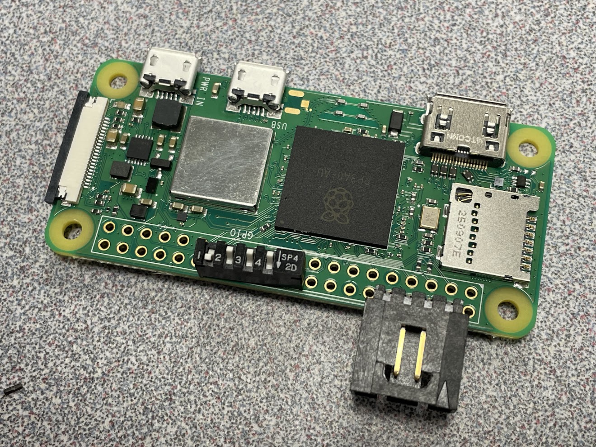
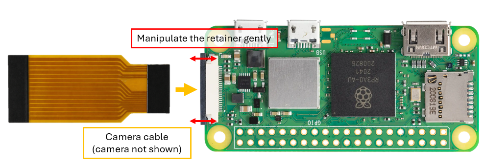
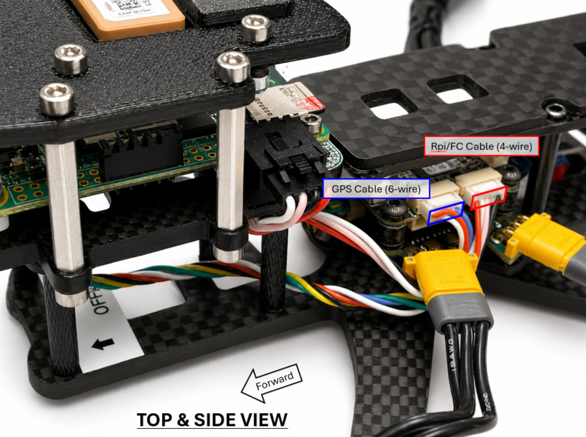
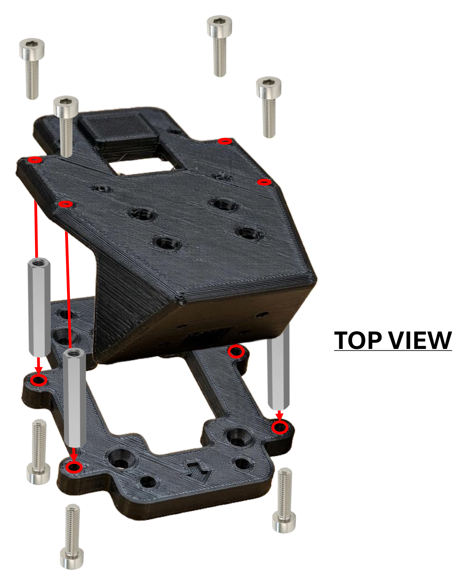

Task 10: Mate camera/GPS mount onto the frame
Set the SIP switch, connect the camera ribbon, route the cables, and install the camera/GPS mount.
Parts required
- Upper/lower frame assembly from Task 9
- Camera/GPS mount assembly from Tasks 2 and 3
- Camera ribbon cable
- GPS/compass cable
- FC/RPi cable
- Fastener kit
- Superstructure subkit
- Four M3 × 25 mm standoffs
- Eight M3 × 12 mm socket-head screws
- Superstructure subkit
Tools required
- 2.5 mm Allen key
Step 1. Set the SIP switch
- Set the Raspberry Pi SIP switch based on your team number.
- Switches in the down position are 0. Switches in the up position are 1.
Binary table.
Use this 4-bit table to convert decimal to binary. Confirm the physical switch order on the bench example before you set the switches.
Use this 4-bit table to convert decimal to binary. Confirm the physical switch order on the bench example before you set the switches.
| Decimal | 4-bit binary |
|---|---|
| 0 | 0000 |
| 1 | 0001 |
| 2 | 0010 |
| 3 | 0011 |
| 4 | 0100 |
| 5 | 0101 |
| 6 | 0110 |
| 7 | 0111 |
| 8 | 1000 |
| 9 | 1001 |
| 10 | 1010 |
| 11 | 1011 |
| 12 | 1100 |
| 13 | 1101 |
| 14 | 1110 |
| 15 | 1111 |

Example of the switch setting. This example shows 0-1-1-1, corresponding to Team 07.
Step 2. Connect the camera ribbon before installing the camera/GPS mount
- Locate the camera connector on the front edge of the Raspberry Pi. This connector is labeled CSI on the board.
- Use a fingernail to gently lift the retainer. Do not remove it.
- Insert the free end of the camera ribbon cable fully and evenly into the camera connector.
- On the Raspberry Pi end, the exposed metal contacts must face down toward the Raspberry Pi PCB.
- Press the retainer back down to clamp the cable. Lightly tug the ribbon to confirm it is locked.

Insert the camera ribbon cable into the Raspberry Pi camera connector. Manipulate the retainer gently. The exposed metal contacts on the Raspberry Pi end must face down toward the PCB.
Do this first.
The Raspberry Pi camera connector is much easier to reach before the camera/GPS mount is installed above it.
The Raspberry Pi camera connector is much easier to reach before the camera/GPS mount is installed above it.
Step 3. Route the GPS and FC/RPi cables
- Route the GPS cable under the Raspberry Pi from the right side of the vehicle, then between the second pair of frame standoffs, then under the front-left motor connector, and then to the FC port marked GPS on the top left front edge of the FC.
- Route the FC/RPi cable between the second pair of frame standoffs, then under the front-left motor connector, and then to the FC port marked TELEM on the top left rear edge of the FC.
- Connect the FC/RPi cable by hand to the 4-pin latch header on the Raspberry Pi.

Proper routing of the GPS cable and the RPi/FC cable. Keep the cables low, route them to the correct ports, and avoid pinch points.
Cable routing goal.
Keep both cables low, clear of the propeller arc, and out of any pinch point between the decks and the mount.
Keep both cables low, clear of the propeller arc, and out of any pinch point between the decks and the mount.
Step 4. Install the camera/GPS mount
- Use the four M3 × 25 mm standoffs and eight M3 × 12 mm socket-head screws from the Superstructure subkit to join the camera/GPS mount to the frame.
- Use the 2.5 mm Allen key to install four M3 × 12 mm screws from below the upper deck into the standoffs.
- Use the 2.5 mm Allen key to install the other four M3 × 12 mm screws from the top of the camera/GPS mount into the standoffs.
- Start all hardware before tightening any one screw fully.
- Use the 2.5 mm Allen key to tighten in a crisscross pattern.
STOP. Ask a faculty member to verify the camera ribbon, GPS cable, and FC/RPi cable before you proceed to software setup.

Install the camera/GPS mount with the Superstructure subkit.
Common errors
- Breaking the camera-connector retainer by prying too hard.
- Installing the camera ribbon with the metal contacts facing the wrong direction.
- Routing the GPS cable or FC/RPi cable into the wrong FC port.
- Pinching a cable between the upper deck and the camera/GPS mount.